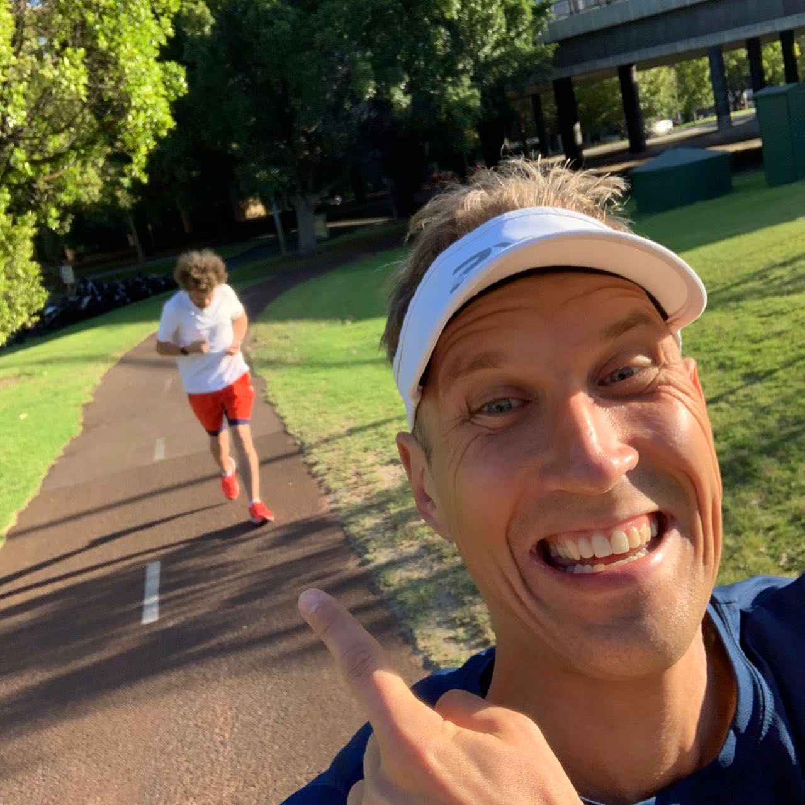
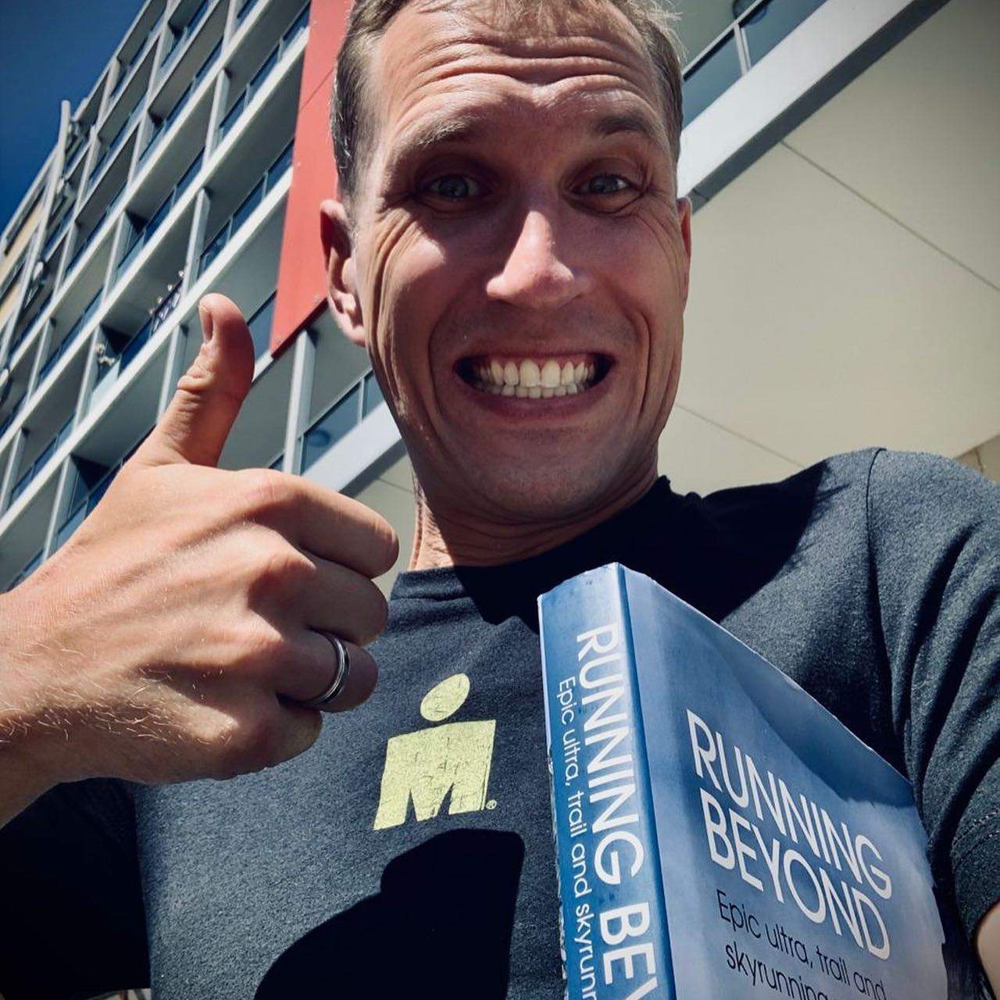

Мы оба просто ультра-рады, что несмотря на все невзгоды 2020 года, мы с нуля подготовили нашего друга @varlamov к марафону сначала в Копенгагене (который отменили 😕), потом к марафону в Сочи (который тоже отменили 🤨), в итоге к марафону в Стамбуле, который состоялся 8-го ноября и где Илья, встроив в своё нереальное расписание, пробежал свои первые 42 км 195 м ровно за 4 часа! 😃👏🏼🥳 А все началось в славном Австралийском городе Перт, где Арсений показал Илье книгу про Ультру! Поздравляем, Илья, теперь тебя не остановить #varlamovdavai беги к новым целям 👏🏼💪🏼 We are ultra-happy that despite all obstacles of 2020 we were able to prepare our friend @varlamov for his first marathon in Copenhagen (which was canceled 😕), then in Sochi (also canceled 🤨) finally in Istanbul, which happened on Nov 8th! Ilya found time in his super hectic schedule and ran his first 42 km 195 m in 4 hr on the dot! Amazing result! It all started in sunny Perth, Australia in January with the book about ultra-running 😄 We are super proud of you @varlamov ! And it’s just the beginning, no one will be able to stop you now 😄 #varlamovdavai ___ #marathon #ultra #firstmarathon #irunthisbody #марафон #runnersofinstagram #running #inspiration #2020goals
2020-11-18 19:51:42
Back to main page